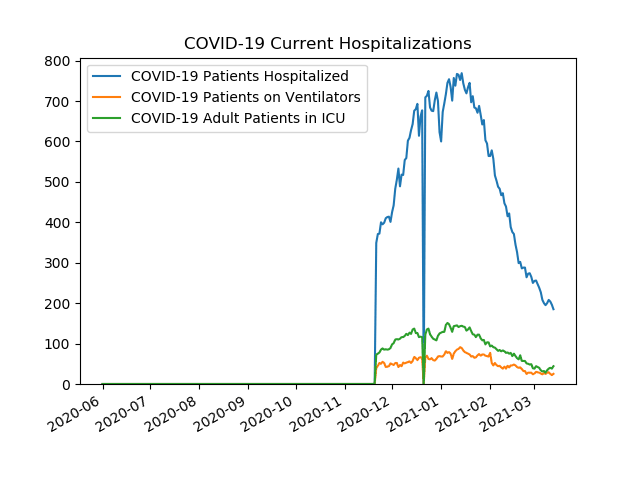
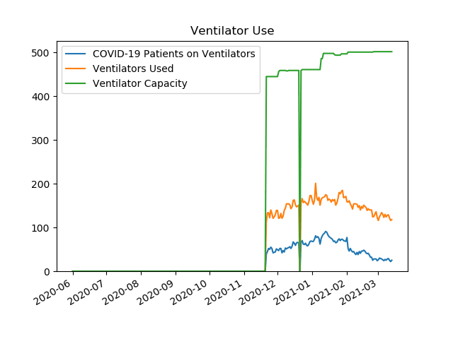
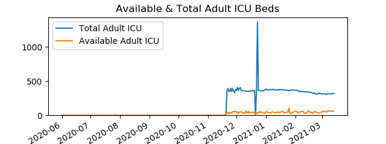
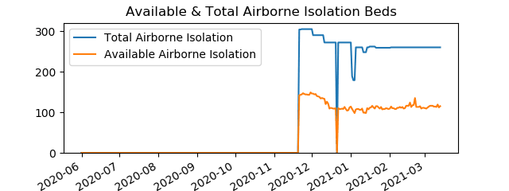
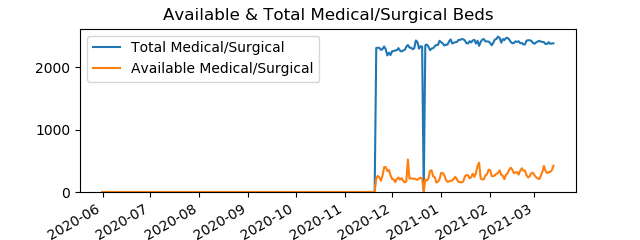
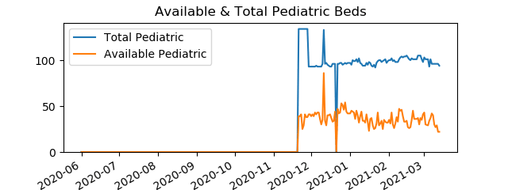

| Date | Adult ICU | Pediatric | Airborne Isolation | Pediatric ICU | Medical/Surgical |
| 20201121 | 29 | 39 | 142 | 6 | 217 |
| 20201201 | 39 | 39 | 146 | 5 | 210 |
| 20210101 | 55 | 42 | 114 | 4 | 305 |
| 20210201 | 64 | 35 | 109 | 3 | 349 |
| 20210214 | 57 | 33 | 116 | 1 | 390 |

Data is from PA Dept Of Health
|  |
|  |
| |
|  |
|  |
|  |
|  |
|  |